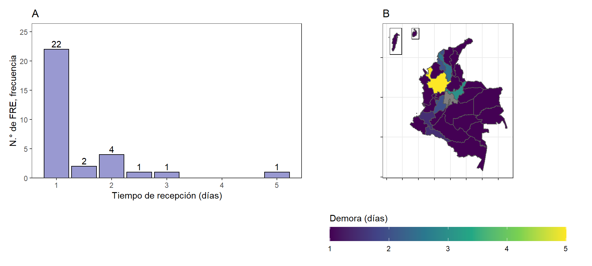
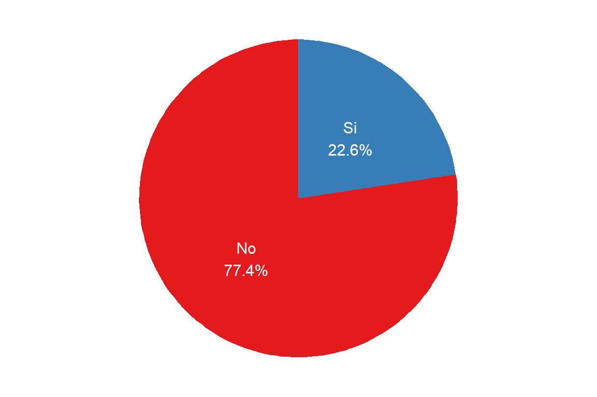

6.2 Procesos relacionados a medicamentos
6.2.1 Recepción de medicamentos
A nivel nacional se cuenta con el “Manual de condiciones esenciales y procedimientos del Servicio Farmacéutico” que está determinado por la Resolución 1403 del 200718 emitida por el INVIMA, que en el título “Recepción y Almacenamiento de Medicamentos y Dispositivos Médicos”, establece que la persona encargada de recibir los medicamentos en la institución debe realizar el siguiente procedimiento:
estudiar la documentación propia de la institución que realiza la recepción, con el fin de establecer los productos a recibir y qué condiciones requieren los mismos para su recepción.
verificar la documentación de quien hace la entrega, p.ej. guía de entrega. Las cantidades solicitadas deben corresponder con las aprobadas tras el pedido.
realizar una inspección de los medicamentos para verificar las (i) unidades, (ii) número de lote, (iii) fechas de vencimiento, (iv) registro sanitario, (v) laboratorio fabricante, (vi) condiciones de almacenamiento durante el transporte, (vii) manipulación, (viii) embalaje, (ix) material de empaque / envase y (x) condiciones administrativas y técnicas establecidas en la negociación.
Después de la inspección, se realiza un muestreo para determinar si los productos recibidos cumplen con especificaciones de calidad. Existen planes de muestreo de aceptación por atributos en el que se suele utilizar la Tabla Militar Estándar MIL-STD-105E19,20, con el fin de seleccionar el tamaño de una muestra aleatoria de acuerdo al tamaño total del pedido, nivel de inspección requerido y otros factores. En casos con un tamaño total de lote pequeño y altos niveles de inspección se suele realiza una inspección completa de los productos recibidos.
Al terminar la inspección se pasa a documentar la recepción y se procede a realizar un “acta de recepción” donde se detalla la información del procedimiento como:
fecha y hora de entrega
cantidad de unidades
número de lote
registro sanitario
fechas de vencimiento
condiciones de trasporte, manipulación y embalaje
material de empaque y envase
condiciones administrativas y técnicas establecidas en la negociación así como la trazabilidad
El acta es firmada por las persona que reciben y entregan para ser archivada. Como parte final se ingresan como parte del inventario a todos los productos pedidos que cumplan con las especificaciones de calidad.
En el caso de los distintos FRE a nivel nacional (ver Figura 6.8), se observa que el FRE Antioquia es el que más días invierte en realizar el proceso de recepción, esto se debe a que sus pedidos son de gran tamaño para cubrir la demanda, lo que conlleva a que deba dispensarse 5 días en todo el proceso de recepción técnica, desde el momento de recepción del producto proveniente del FNE, hasta el ingreso de la misma al sistema, incluyendo la realización del acta.
Figura 6.8: Tiempos en la recepción técnica y almacenamiento de MME. (A) Gráfico de barras con frecuencia. (B) Mapa con tiempos para la recepción técnica de MME.
En segundo lugar se encuentra el FRE Boyacá, el cual presenta un uso de 3 días en todo el proceso, se observa que el volumen de inscritos es alto y que en este caso lo llevan dos regentes de farmacia dando paso a la realización de acta con el transportador y luego una revisión completa de cada medicamentos y correcto almacenamiento con su acta correspondiente.
Como otro atributo que se puede resaltar en la Figura 6.8, es que cinco territorios Atlántico, Quindío, Sucre, Tolima y Bolívar se demoran entre 2-2.5 días para la recepción técnica, debido a su tamaño y a la cantidad de personas disponibles para llevar a cabo este proceso y como ultima observación, se puede ver que 24 de los 31 FRE realizan la recepción técnica durante un día y por máximo un día y medio, debido a que los pedidos realizados no son muy grandes, o como en el caso del Valle del cauca, Cauca y Santander, que son territorios grandes con bastantes inscritos, se determina la prioridad de esta acción donde se establece las personas que llevan a cabo este procedimiento y se ha observado que no sobrepasa un día y medio en esta labor.
Según la Resolución 1403 de 200718, donde se menciona el control durante el proceso de almacenamiento se encuentra que:
“El … establecimiento farmacéutico contará con criterios, procedimientos y recursos que permitan calcular las existencias necesarias para un período determinado, fijando los niveles mínimo y máximo de existencias, punto de reposición o punto de pedido y presupuesto necesario para cumplir con la prestación oportuna del servicio. Se podrán utilizar aquellos indicadores que vayan surgiendo y que permitan realizar un exacto control de existencias”.18
Con esto cabe aclarar que el control de existencias depende del criterio de cada organización, según como estas manejen sus productos, por ende, se preguntó el uso de niveles de seguridad del inventario entendiendo el concepto como aquel nivel de existencias de productos que indica que ya es momento de pedir más productos y lo que se tiene es suficiente para cubrir la demanda sin caer en desabastecimientos, mientras se reestablece los niveles óptimos de inventario.
Figura 6.9: Uso de niveles de seguridad del inventarios.

Según los resultados obtenidos el 51.6% de los FREs si manejan niveles de seguridad en los inventarios, es decir que de los 31 FREs existentes solo 16 manejan esta práctica y los 15 restantes no la usan; entre las razones para el no uso de esta estrategia se encuentra que la cantidad de medicamentos que rotan en algunos territorios no es muy alto, por ende, con la experiencia adquirida se sabe en qué momento se debe empezar a realizar el proceso de pedido de medicamentos (como p.ej. Guainía o Guaviare).
En otros casos se ve que el personal del FRE considera que su contacto directo con diario con los medicamentos, les permite verificar el comportamiento y determinar el momento indicado para tomar alguna acción. Se concluye entonces que 16 FREs usan estrategias de manejo óptimos de inventario y los 15 restantes lo hacen de una manera tradicional y dada por la experiencia adquirida con los años que llevan manejando el FRE en su región.
6.2.2 Controles en Venta Directa a Paciente
En la Figura 6.10 se tienen las medidas adoptadas como controles en la venta directa de MME a pacientes. La más común es la revisión exhaustiva del recetario (realizada por 22 de 30 FRE), seguido de la solicitud de identificación a los pacientes (realizada por 21 de 30 FRE). Existen otras medidas aplicadas como revisión de registro del prescriptor, revisión de historias clínicas y llamada al médico prescriptor. Por último, existen medidas menos poco frecuentes como visitas domiciliarias, llamadas al servicio farmacéutico, llamada al paciente o posposición de la entrega. Se tienen algunos FRE que no realizan controles, debido a que no realizan dispensación a los pacientes como Quindío, Valle del Cauca, Putumayo, Nariño o Risaralda.
Figura 6.10: Controles en las ventas directas a pacientes.

Figura 6.11: Existencia de otras instituciones que realizan ventas a instituciones a MME.
